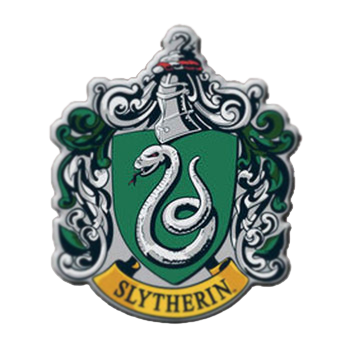

História
A Casa Sonserina é uma das quatro casas da Escola de Magia e Bruxaria de Hogwarts. Foi fundada por Salazar Sonserina, um dos quatro fundadores da escola. Sonserina valoriza características como astúcia, ambição, determinação e sangue puro. A Serpente é o símbolo da casa, e suas cores são verde e prata. A entrada para a Sala Comunal de Sonserina está localizada atrás de uma parede de pedra, acessada por meio de uma senha secreta. Ao longo da série, a casa é retratada como tendo uma reputação de produzir bruxos ambiciosos e astutos, embora também tenha uma certa fama de ser associada a práticas sombrias.
Características e Princípios
Astúcia
Os membros da Sonserina valorizam a astúcia e a habilidade de pensar rapidamente para alcançar seus objetivos. São estrategistas e muitas vezes buscam soluções inteligentes para os problemas.
Ambição
A ambição é uma característica fundamental da Sonserina. Os bruxos dessa casa têm grandes aspirações e estão dispostos a fazer o que for preciso para alcançar o sucesso, muitas vezes buscando poder e reconhecimento.
Lealdade à Casa
Os sonserinos muitas vezes valorizam a lealdade à sua casa e buscam a excelência para elevar a reputação da Sonserina.
Determinação
Os sonserinos são conhecidos por sua determinação e perseverança. Eles não desistem facilmente diante de desafios e trabalham arduamente para atingir seus objetivos.